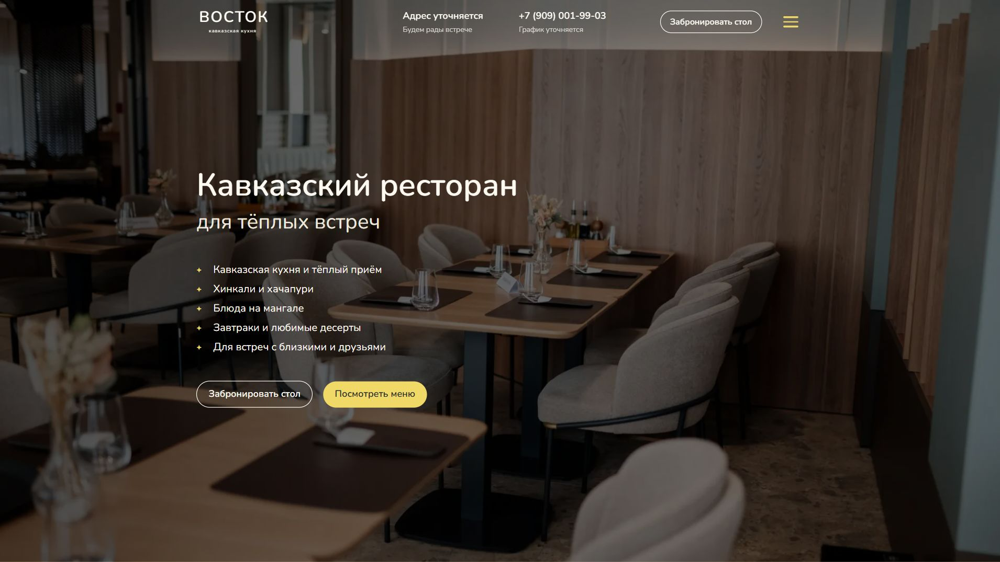

ВОСТОК — сайт ресторана
Сайт кавказского ресторана, который знакомит гостей с кухней, атмосферой и форматами встреч. Ниже — скриншот рабочего макета.

Что реализовано
- Главный экран с описанием ресторана и переходами к меню и бронированию по телефону.
- Меню с карточками блюд, разделы событий и акций.
- Галерея интерьера, блоки мероприятий, клуба гостей и контактов.
Это демонстрационная версия: часть предложений и сведений о ресторане ещё готовится. Публичная интерактивная версия пока не опубликована.
← Вернуться в портфолио